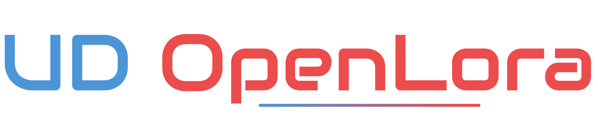

UdOpenLora là một dự án mã nguồn mở, nhằm tạo ra cộng đồng nghiên cứu và thiết kế các hệ thống IOT sử dụng công nghệ LoRa(Long Range), một công nghệ đột phá được áp dụng rộng rãi trong việc phát triển các ứng dụng Smart City.
Thảo luận
Mã nguồn
Mua thiết bị